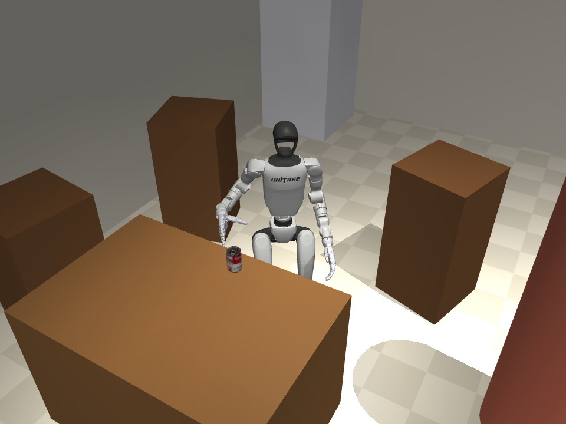
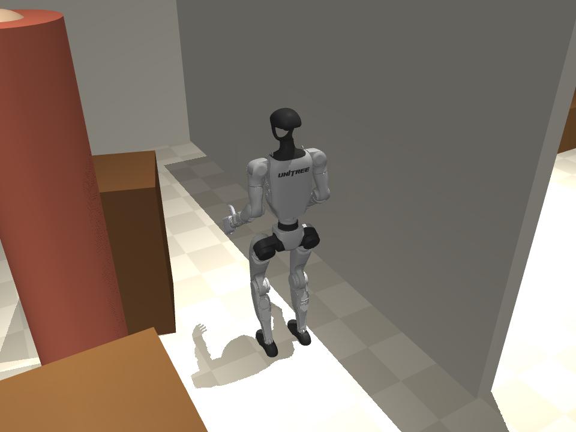
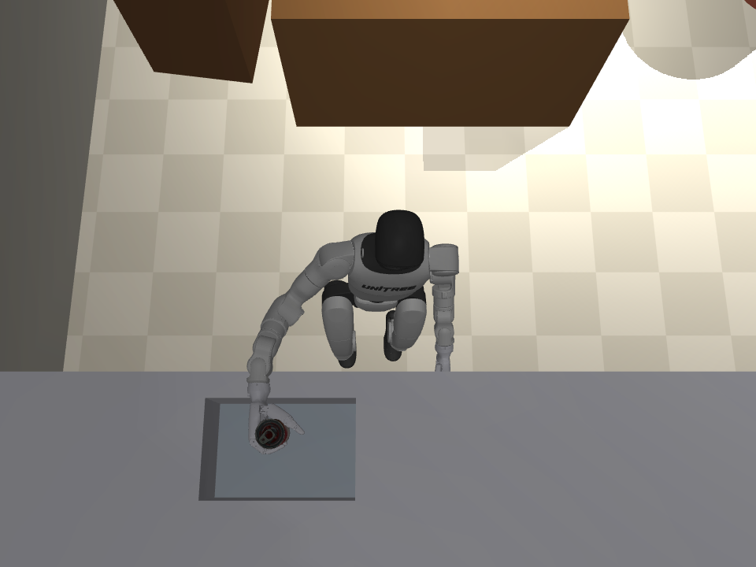

Pain point
Người cao tuổi và người đi lại khó khăn sống một mình phải tự làm những việc nhỏ lặp lại mỗi ngày, ví dụ mang lon, cốc ra bồn rửa. Mỗi lần đi qua nhà là một lần có nguy cơ ngã, mà không phải lúc nào cũng có người giúp.
Robot chỉ có ích nếu làm được cả 3 điều
1
Làm xong việc trong nhà thật
Bàn ghế bị xê dịch mỗi ngày, đồ vật không ở chỗ cũ, bồn rửa không nằm ở toạ độ lập trình sẵn.
Đo: tỷ lệ thành công, thời gian (E3, E5)
2
An toàn với người sống cùng
Người đi chậm, dừng bất chợt, đứng đúng chỗ robot cần làm việc. Không va chạm khi robot di chuyển, không làm rơi đồ, không ngã.
Đo: số lần chạm người, khoảng cách, số lần ngã (E1, E3, E4, E5)
3
Không lập trình lại cho từng nhà
Robot tự tìm đồ vật và bồn rửa bằng camera của nó, không đọc vị trí từ trình mô phỏng.
Đo: sai số nhận thức, chạy khi bồn bị dời; chính sách học ACT / Ψ₀ (E2, E3)
Giải phápRobot nhận lệnh bằng lời, tự đi (LiDAR + lập đường + lớp an toàn 50 Hz), tự nhìn (camera RGB-D đầu tìm lon và bồn), tự gắp và thả bằng bàn tay 5 ngón.
29/30nhiệm vụ trọn vẹn25/30với người cao tuổi0lần ngã

Robot đứng ở bàn ăn, camera đầu tìm lon súp YCB, bàn tay Inspire chuẩn bị nắm


1Đi tới bàn ăn
2Camera tìm lon
3Nắm bằng tiếp xúc ngón
4Mang sang bếp
5Camera tìm bồn
6Thả vào bồn